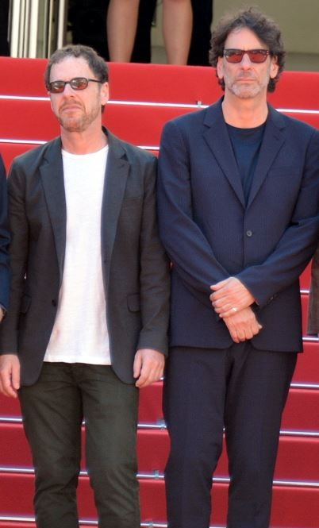

Joel and Ethan Coen

Biography
Joel Coen (born November 29, 1954) and Ethan Coen (born September 21, 1957),[1][1] collectively referred to as the Coen brothers, are American filmmakers. Their films span many genres and styles, which they frequently subvert or parody.[2] Their most acclaimed works include Miller's Crossing (1990), Barton Fink (1991), Fargo (1996), The Big Lebowski (1998), No Country for Old Men (2007), True Grit (2010), and Inside Llewyn Davis (2013).
- Fargo